スマホで記入できる頭痛ダイアリー ─ 記録した内容はPDFにして医師に見せられます
アプリを開くと「記録」画面が表示されます。画面下のタブで4つの画面を切り替えます。
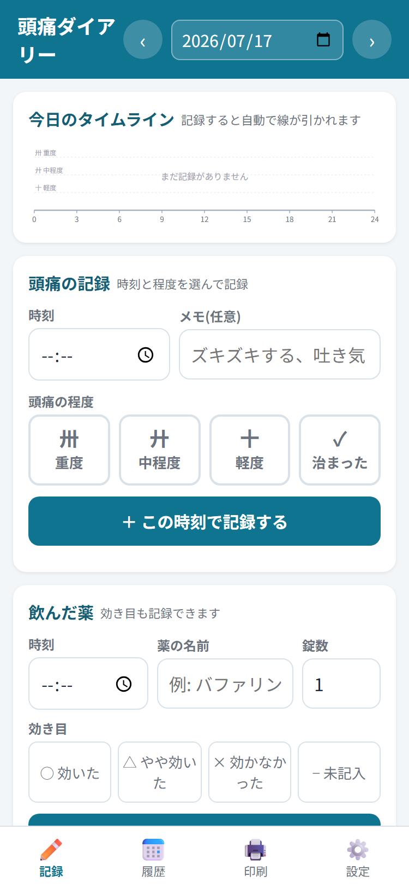
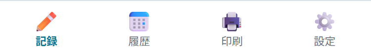
紙のダイアリーの「午前・午後・夜」の代わりに、時刻を指定して記録します。記録するたびに、タイムラインへ自動で線が引かれます。
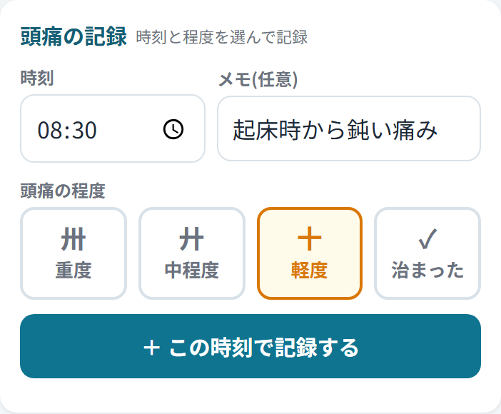
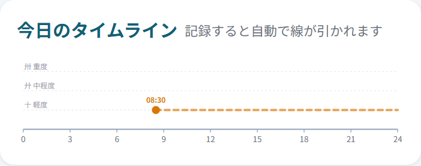
程度が変わったら同じ手順で記録してください。線の高さが変わってつながります。痛みが治まったら「✓ 治まった」を記録すると線が終わります。
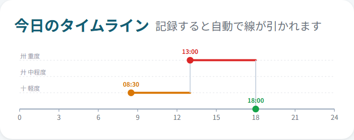
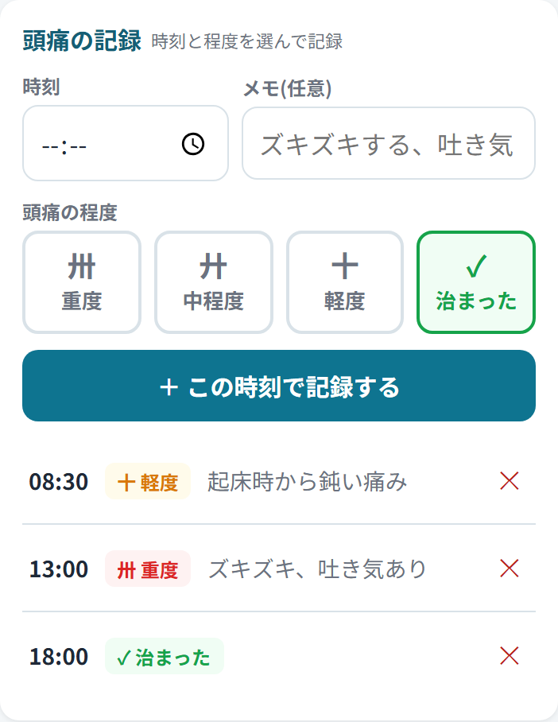
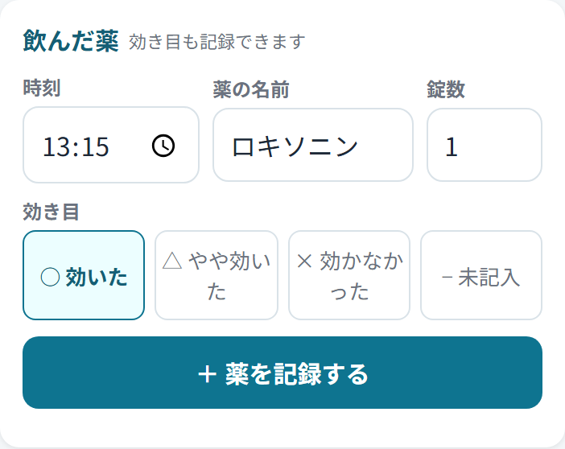
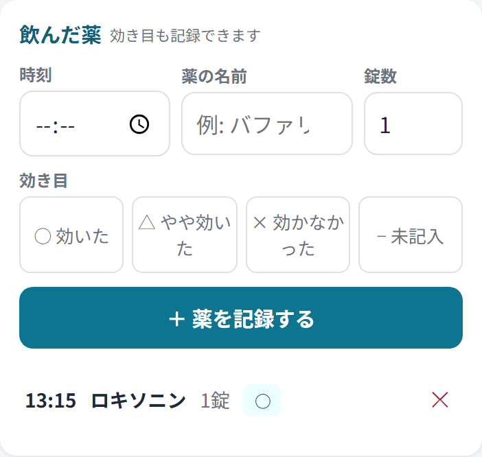
その日の頭痛が生活にどれくらい影響したかを、あてはまるものをタップして選びます(1日1つ)。
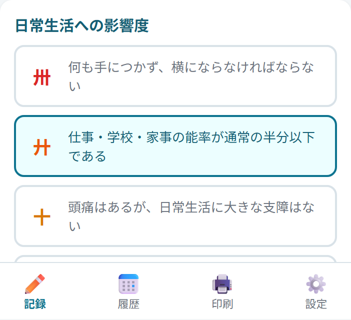
思いあたる原因(寝不足、天気、肩こり、飲酒など)があれば書いておきましょう。入力すると自動で保存されます(保存ボタンはありません)。
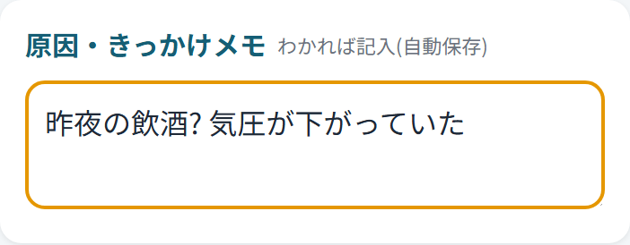
画面上部の日付の左右にある 「‹」「›」ボタンで前の日・次の日に移動できます。日付部分をタップするとカレンダーから選べます。記録し忘れた日への追記や、過去の記録の修正(✕で消して記録し直す)ができます。
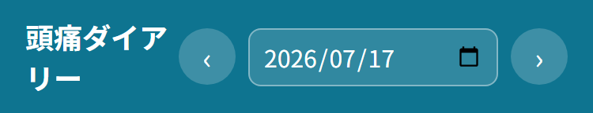
「履歴」タブでは、記録のある日が新しい順に並びます。各日のタイムライン・その日の最大の程度・影響度・薬・メモをまとめて確認できます。日付をタップするとその日の記録画面に移動して修正できます。
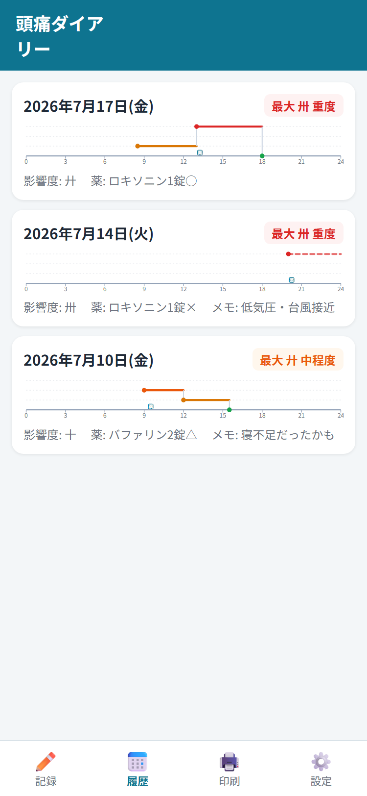
「印刷」タブで期間を選ぶと、紙のダイアリーのような一覧表が作られます。受診時に医師へ見せる場合は、通院間隔に合わせて「今月」「先月」「直近2週間」ボタンが便利です。
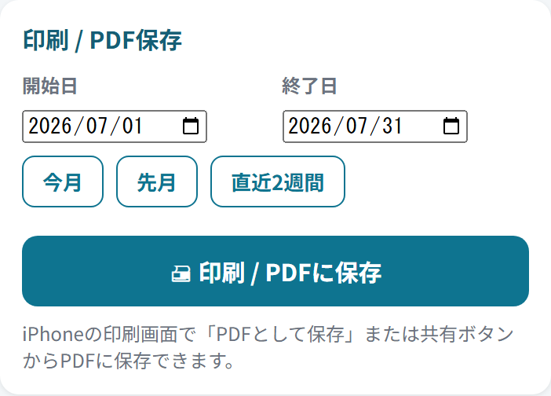
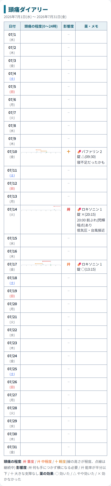
記録はこの端末のブラウザ(Chrome)の中に保存されており、インターネットには一切送信されません。その代わり、ブラウザのデータを消すと記録も消えてしまいます。
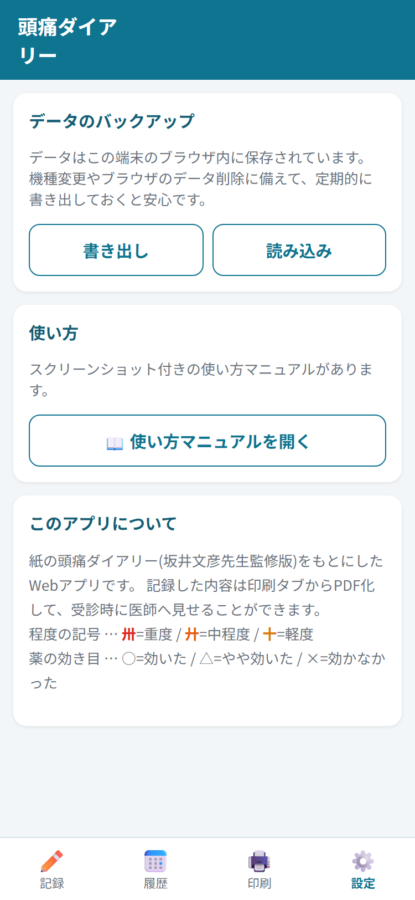
| 頭痛の程度 | 卅 重度 |
|---|---|
| 廾 中程度 | |
| 十 軽度 (タイムラインでは線の高さと色で表されます。点線=継続中) | |
| 影響度 | 卅 何も手につかず、横にならなければならない |
| 廾 仕事・学校・家事の能率が通常の半分以下である | |
| 十 頭痛はあるが、日常生活に大きな支障はない | |
| 薬の効果 | ○ 効いた |
| △ やや効いた | |
| × 効かなかった |
記号は紙の頭痛ダイアリー(坂井文彦先生監修版)と同じ意味です。
← アプリに戻る